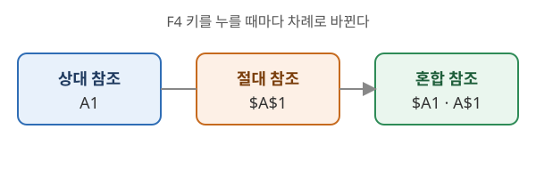

이 문서는 oa-typeset 의 조판 견본이다. 장·절·항·표·목록·그림이 한글·Word·PowerPoint 에서 어떻게 옮겨지는지 보여 준다.
스프레드시트의 셀은 열 문자와 행 번호를 이어 붙인 주소로 가리킨다. A열 1행의 셀은 A1 이고, 범위는 콜론으로 이어 A1:C5 처럼 쓴다. 다른 시트의 셀은 시트 이름 뒤에 느낌표를 붙여 Sheet2!B3 처럼 적는다.
수식을 다른 셀로 복사하면 참조 주소가 따라 움직인다. 움직이지 않게 하려면 열이나 행 앞에 $ 를 붙인다.

| 방식 | 표기 | 복사할 때 | 쓰는 곳 |
|---|---|---|---|
| 상대 참조 | A1 | 열·행 모두 바뀐다 | 같은 계산을 줄마다 반복 |
| 절대 참조 | $A$1 | 바뀌지 않는다 | 세율·환율처럼 고정된 값 |
| 혼합 참조 | $A1, A$1 | $ 가 없는 쪽만 바뀐다 | 구구단표처럼 행·열 교차 계산 |
자주 쓰는 셀이나 범위에 이름을 붙이면 수식이 읽기 쉬워진다.
수식이 계산되지 못하면 셀에 오류 값이 나타난다. 오류의 뜻을 알면 원인을 빨리 찾을 수 있다.
| 오류 값 | 뜻 | 대표 원인 |
|---|---|---|
| #DIV/0! | 0으로 나눔 | 나누는 셀이 비었거나 0 |
| #N/A | 값을 찾을 수 없음 | 찾기 함수에서 일치하는 값이 없음 |
| #NAME? | 모르는 이름 | 함수 이름 오타, 정의하지 않은 이름 |
| #REF! | 잘못된 참조 | 참조하던 셀을 삭제함 |
| #VALUE! | 잘못된 값의 형식 | 숫자 자리에 문자를 넣음 |
함수는 =함수이름(인수1, 인수2, …) 의 꼴로 쓴다. 인수에는 값, 셀 주소, 범위, 다른 함수가 들어갈 수 있다. 함수 안에 함수를 넣는 것을 중첩이라 한다.
| 함수 | 하는 일 | 예 |
|---|---|---|
| SUM | 합계 | =SUM(B2:B10) |
| AVERAGE | 평균 | =AVERAGE(B2:B10) |
| COUNTIF | 조건에 맞는 셀 개수 | =COUNTIF(C2:C10,">=80") |
| RANK.EQ | 순위 | =RANK.EQ(B2,$B$2:$B$10) |
표에서 값을 찾아 다른 열의 값을 돌려준다. 첫 열에서 찾는 VLOOKUP 이 가장 많이 쓰인다.
찾을 범위를 상대 참조로 두고 수식을 아래로 복사하면 범위가 한 줄씩 내려가 아래쪽에서 #N/A 가 난다. 범위는 $A$2:$D$50 처럼 고정한다.